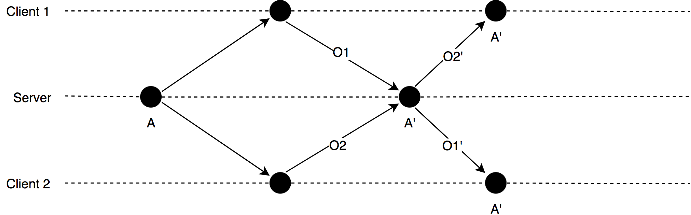
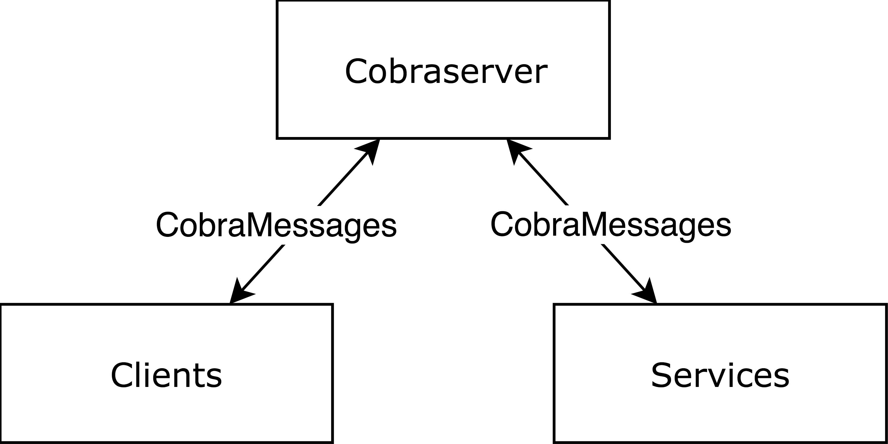

Bachelorarbeit Kolloquium
Integration des Language Server Protocols in eine auf Operational Transformation basierende Editorumgebung
Nico Fricke
29.08.2018
Gliederung
- Motivation
- Grundlagen
- Language Server Protocol
- Operational Transformation
- Cobra
- Zielsetzung
- Umsetzung
- Ergebnis und Ausblick
Motivation
Kollaboratives Arbeiten:
- Office Lösungen bereits vorhanden
- Editoren:
- Mangel an Sprachenunterstützung
- Lösung: Language Server Protocol
Language Server Protocol
- Von Microsoft entwickelter Standard
- Kommunikation zwischen einem Client (zum Beispiel ein Editor) und einem Language Server
- JSON-RPC Schnittstelle
- Benötigt einen Workspace
Operational Transformation
- Nebenläufigkeitsmodell für das kollaborative Arbeiten an Dokumenten
- Operationen beschreiben den Unterschied zwischen Versionen
- Definierte Menge an Operationen
- Insert(String)
- Retain(Int)
- Delete(Int)
- Operationen werden miteinander transformiert
Operational Transformation

Cobra
- Präsentationstool
- Interaktives Darstellen von Code:
- Kollaboratives Arbeiten auf Basis von Operational Transformation
Cobra - Architektur

- Client/Server
- Services werden wie Clients behandelt (Universal Collaboration)
- Kommunikation über CobraMessages
CobraMessages
- Änderung
- Informationen
- Annotationen
Zielsetzung
- Konzept der Integration des LSP in Cobra
- Implementierung
Integration
Umwandlung von Nachrichten im Service:
- Änderungen → didChange + Änderung auf Dateisystem propagieren
- Informationen ↔ hover
- Annotationen ← publishDiagnostics
Erweiterung
- Erweiterung von Informationen:
- Service muss auf weitere Antworten warten
- Zusammenfügen von allen Antworten
- Anhängen weiterer Informationen an Annotations
- Einführen neuer Cobramessages
- Benötigt Anpassung im Server, Client und Service
Beispiel
Rename:
- Auslöser im Client
- Rename-Anfrage vom Client an CobraServer
- Weiterleitung an Service
- Weiterleitung an LS
- Verarbeitung der Antwort:
- Liste an Änderungen am Dokument in Operationen umwandeln
- Operationen an Server senden
Ergebnis
- Umsetzung des LS-Communicators
- STDIO Kommunikation mit LS
- JSON-RPC parsen/schreiben
- Implementierung des Filessavers
- Implementierung des LS-Services
- Proof of Concept
Ausblick
- Implementierung weiterer Konzepte
- Dynamische LS-Sprachen Zuordnung
- Verbesserte Darstellung der aktuellen Meldungen
Quellen
- https://www.jsonrpc.org/specification
- https://microsoft.github.io/language-server-protocol/
- Martin Ring und Christoph Lüth. »Collaborative Interactive Theorem Proving with Clide«. In: Interactive Theorem Proving.
- Chengzheng Sun und Clarence Ellis. »Operational Transformation in Real-time Group Editors: Issues, Algorithms, and Achievements«. In: Proceedings of the 1998 ACM Conference on Computer Supported Cooperative Work.
Fragen?
Vielen Dank für ihre Aufmerksamkeit.